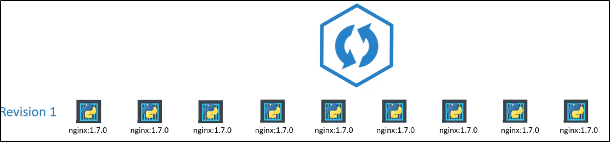

Deplyment - Update and Rollback
Prima di tutto, cerchiamo di capire cosa sono il Versioning e Rollout.
Quando per la prima volta crei un deployment, triggera un
Rollout
.
Un nuovo Rollout crea una nuova
Deploy revision
.

0:25